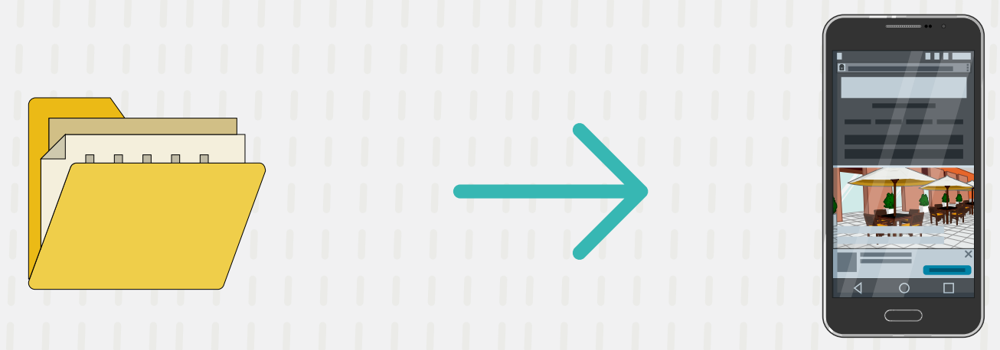

3. Cloud Computing y Programación
5. Trabajando con API's
Tipos de API
|
1. API de servicios web: Éstas intercambian información entre una aplicación y un servicio web, usando peticiones HTTP o HTTPS. Los formatos usados son XML y JSON. Existen cuatro subtipos de API de servicios web:
|
 |
| 2. API basadas en bibliotecas: Realizan el intercambio de información mediante la importación de una biblioteca en la aplicación. |  |
| 3. API basadas en clases: La conexión con los datos se permite con el uso de clases. | |
| 4. API de sistemas operativos: Permiten que los diversos programas se comuniquen con el sistema operativo. |
Las API disponibles más comunes son:
AUTENTICACIÓN
Permite a los usuarios utilizar cuentas de otros servicios de uso popular (como redes sociales o mensajería) para registrarse y/o identificarse en la aplicación.
ALMACENAMIENTO
Utiliza la infraestructura de un tercero para guardar datos e información no estructurada, incluyendo la seguridad con la que son transportados y almacenados.
PAGO EN LÍNEA
Incluye diferentes métodos de pago electrónico, útil principalmente en aplicaciones de venta en línea para proporcionar a sus usuarios la facilidad de comprar desde cualquier lugar y momento.
PUBLICACIÓN DE CONTENIDO
Permite que los usuarios de la aplicación utilicen los servicios de redes sociales y servicios de mensajería para publicar y distribuir contenido.
ANTI-ROBOTS
Previene ataques de denegación de servicio, al distinguir las solicitudes realizadas por los usuarios de aquellas hechas por sistemas automáticos (robots) durante el despliegue de ciberataques.
GEOLOCALIZACIÓN
Proporciona servicios de ubicación geográfica en las aplicaciones, por ejemplo, mapas, rutas, transporte, entre otros.
Obra publicada con Licencia Creative Commons Reconocimiento Compartir igual 4.0